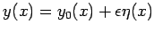
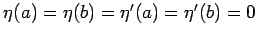
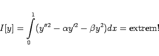
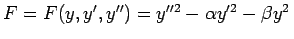
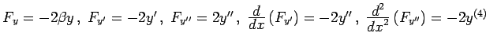
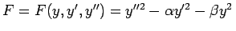
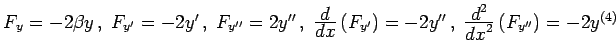
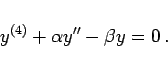
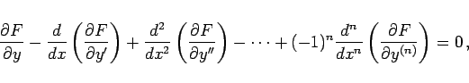

Inhalt Index DeskTop Bronstein

 Variationsrechnung Variationsaufgaben mit Funktionen einer Veränderlichen
Variationsrechnung Variationsaufgaben mit Funktionen einer Veränderlichen


Es werden zwei Aufgabenklassen betrachtet.
mit den Randbedingungen
wobei die Zahlenwerte a, b, A, B, A' und B' sowie die Funktion F gegeben sind. Analog zur Verfahrensweise unter EULERsche Differentialgleichung der Variationsrechnung werden Vergleichsfunktionen  mit  eingeführt, und man erhält die EULERsche Differentialgleichung
als notwendige Bedingung für die Lösung des Variationsproblems (10.30a). Die Differentialgleichung (10.31) stellt eine Differentialgleichung 4. Ordnung dar. Ihre allgemeine Lösung enthält 4 willkürliche Konstanten, die mit Hilfe der Randbedingungen (10.30b) bestimmt werden können.
| Beispiel |
|
Für das Problem |
|  | (10.32a) |
mit gegebenen Konstanten  und
und  gilt . Daraus folgt , und die EULERsche Differentialgleichung lautet:
gilt . Daraus folgt , und die EULERsche Differentialgleichung lautet:
|  | (10.32b) |
Das ist eine lineare Differentialgleichung 4. Ordnung mit konstanten Koeffizienten.
|  | (10.33) |
deren Lösung Randbedingungen analog zu (10.30b) bis zur Ordnung n-1 erfüllen müssen.